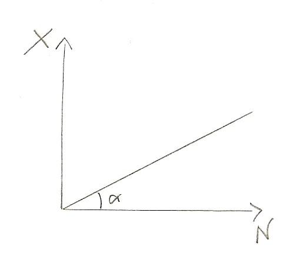
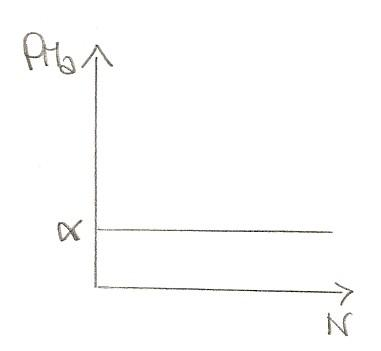

Torna alla pagina di Economia del Cambiamento Tecnologico
:: Economia del Cambiamento Tecnologico ::
Lezione 11/11/2008
Seguito esempio lezione scorsa
Si consideri questo esempio facendo un passo in più:
Si consideri un sistema economico che sia in equilibrio in ogni intervallo temporale. Si produce solo grano, le terre sono abbondanti e uniformemente fertili. Perciò:
X = f(N).
f(N) è a rendimenti costanti cioè ciascun campo che utilizziamo dà in media la stessa quantità di prodotto.
Se X = xN per trovare le misure di produttività possiamo vedere che esse sono date da:
- PMeN = X/N = α
- PMaN = dX / dN = α
Se questo è vero allora non c'è rendita. Vediamolo nel grafico:


Teoria del valore
Ci sono due teorie date dai maggiori classicisti:
- A. Smith diceva che il valore di un bene è la quantità di lavoro necessaria per produrre quel bene, coincide quindi con il salario
- D. Ricardo dice che è il costo totale di produzione
Qual'è il legame tra quantità di lavoro e prodotto marginale?
La quantità di lavoro in più ralizzata da un addetto in più nell'unità di tempo è il PMaL
E come faccio a trovare la quantità di lavoro necessaria per produrre una unità di prodotto in più nell'unità di tempo?
Faccio il reciproco del prodotto marginale cioè: 1/PMaL
Compito
Sia
- m = 0,6 quintali di grando il prodotto medio di ogni lavoratore in un dato periodo
- p = 2 £ il prezzo del grano al quintale
- x = 1 £ il salario per ogni lavoratore
- K (capitale circolante) = 100 £ all'inizio dell'anno
Determinare:
- l'occupazione all'anno 0
- il saggio di profitto all'anno 0
- se i profitti vengono interamente reinvestiti (accumulati in K) a quanto ammonta il saggio di accumulazione?
Si supponga che l'offerta di lavoro (serbatoio di lavoro) si esaurisca all'inizio del 3° anno
Si determini:
4. il salario di mercato all'inizio dell'anno 4 e il saggio di profitto nell'anno 4
1.
K = W
W = Nx
Utilizziamo queste due equazioni e scopriamo che:
100 = N1 -> 100 sono i lavoratori all'anno 0
2.
Se Profitti = Ricavi - Costi avrò che:
- Ricavi = m*N*p di cui:
- Costi = x*N di cui:
Perciò mi troverò che avrò R = 120 e C = 100, P sarà 20.
Come trovo adesso il saggio di profitto?
Tramite il ROE, l'indice di redditività dato da flusso/stock, cioè PROFITTO/CAPITALE CIRCOLANTE. Quindi:
ROE = 20/100 = 20% che è il saggio di profitto
3.
E il saggio di accumulazione?
Siccome coincide con il profitto (perchè il capitale viene reinvestito) sarà ancora 20%
4.
Ricordiamo la legge di capitalizzazione composta per cui gli interessi maturati si accumulano sugli interessi già capitalizzati. Ad esempio: se C1 = C0 + I (dove I = i* C0), perciò riassumendo avrò C0*(1+i) avrò che C2 = C1*(1+i) allora si può dire che C2 = C0*(1+i)*(1+i)
Perciò sostituendo a queste variabili quelle date dal problema avremo:
N3 = N0 (1+0,20(saggio di accumulazione))3 = 172,80 -> numero di occupati reali
Quanti operai però gli imprenditori sono disposti ad assumere all'inizio del 4 anno?
Utilizziamo la stessa formula arrivando però fino all'anno 4:
N3 = N0 (1+0,20)4 = 207,36 -> numero di occupati richiesti
Perciò: gli imprenditori vorrebbero assumere 207,36 operai, ma ne hanno a disposizione solo 172,80. Come equilibrare il mercato?
Prendiamo in riferimento l'equazione del monte salari e vediamo a quanto ammonta il salario all'inizio del 4 anno a queste condizioni, creando un sistema di 3 equazioni e 3 incognite:
- W = xN
- W = K4
- K4 = 207,36
Sostituendo ci troviamo ad avere una sola equazione che ci dà x (salario unitario reale):
Perciò per far tornare in equilibrio il sistema il salario aumenta. Però in questo modo P diminuisce. Quale sarà il saggio di profitto al 4 anno perciò?
- RICAVI = PMeN * Occupati * Prezzo = 0,6*172,80*2 = 207,36
- COSTI = Occupati * Salario = 172,80*1,20 = 207,36
- CAPITALE = 207,36
Perciò:
π = RICAVI - COSTI / CAPITALE = 207,36-207,36/207,36 = 0
Ammesso che nel periodo 4 si raggiunga un equilibrio, esso corrisponde a una situazione in cui i salari sono maggiori e il saggio di profitto è tornato ad annullarsi.
Torna alla pagina di Economia del Cambiamento Tecnologico